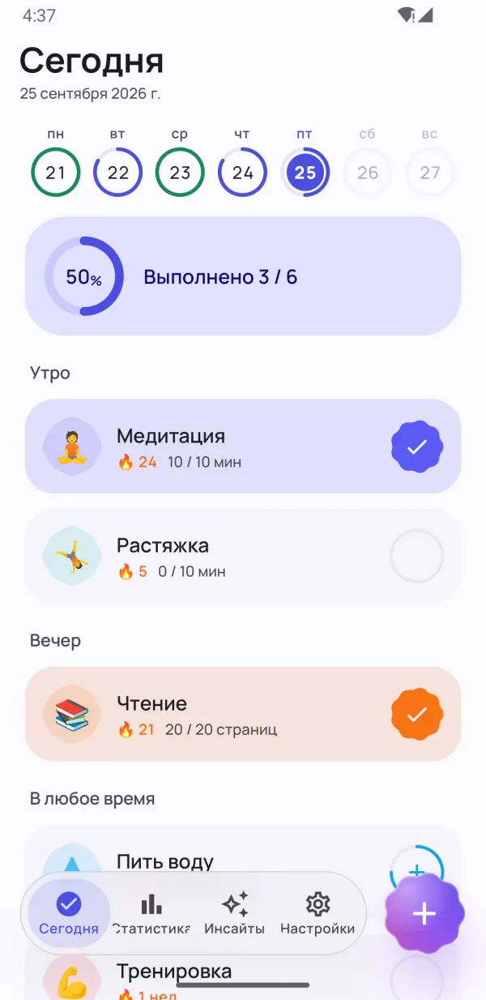
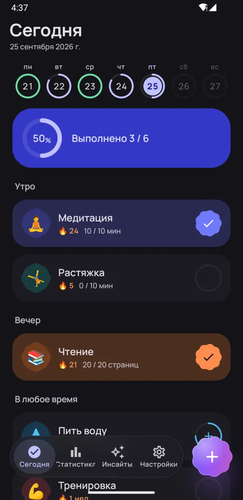
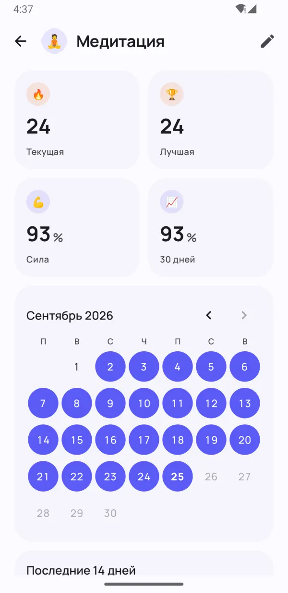
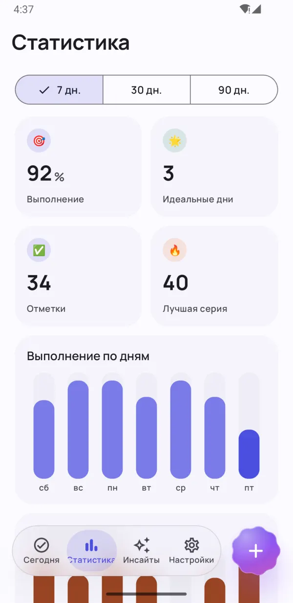
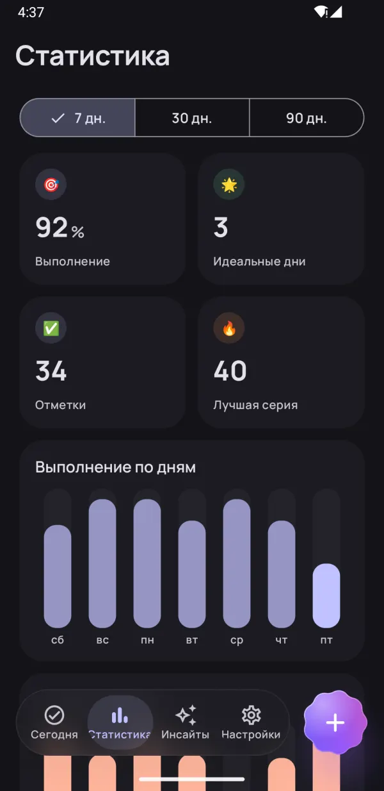
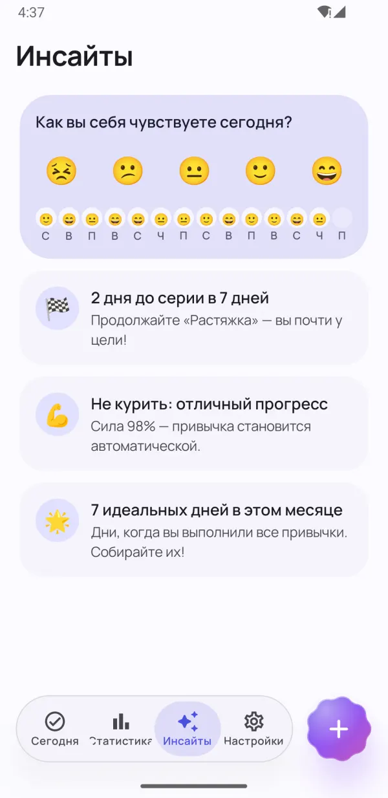
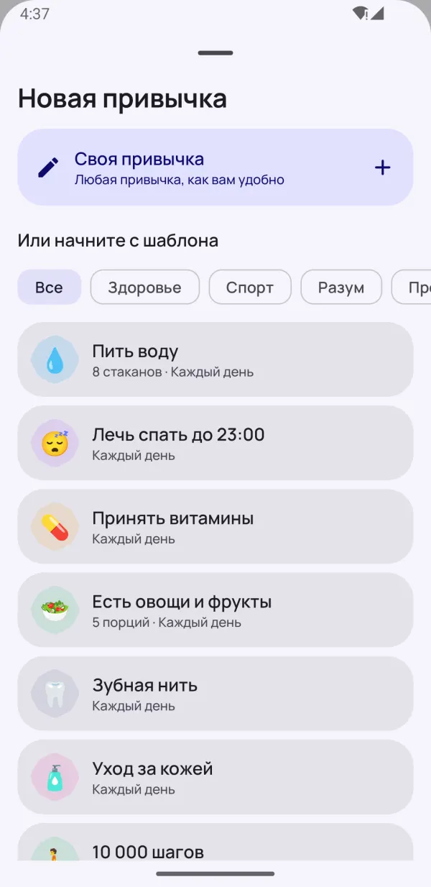
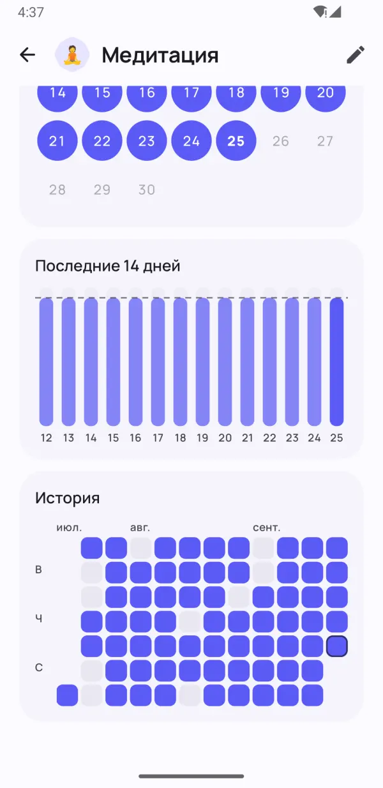

Маленькие привычки.
Большие перемены.
Dotday помогает вырабатывать полезные привычки и избавляться от вредных — без давления. Отмечайте в одно касание, сохраняйте серию даже в загруженные дни и смотрите, что действительно работает именно для вас.
- Бесплатно
- Без регистрации
- Данные остаются на телефоне
- 13 языков


Чтобы привычки закрепились
Всё, что нужно для регулярности, — и ничего лишнего.
Весь день — в одно касание
Группы «Утро», «День» и «Вечер» превращают распорядок в простой чек-лист. Одно касание — и готово.
- Да/нет, количество, таймер и отказ от вредного
- Лента недели показывает каждый день
- «Готово» и «Через 10 мин» прямо в напоминании

Серии, которые прощают плохой день
Дни отдыха, гибкое расписание и заморозка серии помогают не сдаваться. Сила привычки показывает, насколько прочно она закрепилась, а не только длину серии.
- Пропустите день, не прерывая серию
- Заморозка серии для загруженных дней и болезни
- Сила привычки от 0 до 100%


Видно реальный прогресс
Тепловые карты, календарь и динамика выполнения показывают, как идут дела за 7, 30 и 90 дней.
- Тепловая карта для каждой привычки
- Лучшая серия и процент выполнения
- Красиво в светлой и тёмной теме

Инсайты, которые мотивируют
Отмечайте настроение за секунду — Dotday найдёт, что работает: ваши лучшие и самые трудные дни и привычки, которые поднимают настроение.
- Настроение в одно касание
- Подсказки перед следующей целью
- Найдите привычки, от которых вы счастливее
Мелочи, которые решают
Продуманные функции, с которыми отслеживать привычки легко.
Виджеты на главный экран
Отмечайте привычки, следите за серией или тепловой картой — не открывая приложение.
Напоминания, которые работают
Отметьте привычку или отложите её прямо из уведомления.
Встроенный таймер
Для привычек на время — таймер с живым уведомлением.
Health Connect
Шаги, сон и тренировки могут отмечать привычки автоматически.
40 шаблонов
Вода, чтение, спорт, медитация, без курения — старт за секунды.
План на день
Распределите привычки по утру, дню и вечеру.
Заметки и настроение
Добавляйте заметку к любому дню и смотрите, как привычки влияют на настроение.
Тёмная тема и AMOLED
Цвета Material You и полностью чёрная тема для OLED-экранов.
Резервная копия
С Pro экспортируйте всё в JSON или CSV и восстановите на новом телефоне.
Загляните внутрь
Привычки, которые остаются Видно реальный прогресс Вся статистика с одного взгляда Инсайты, которые мотивируют 
Старт за секунды: 40 шаблонов Красиво в тёмной теме 
Каждый день — под контролем Приватно. Без аккаунта и рекламы.
Начните меньше чем за минуту
Без аккаунта, без настройки, без обучения. Читать полную инструкцию →
Выберите привычки
Возьмите один из 40 шаблонов или создайте свою — любую привычку, как вам удобно.
Отмечайте каждый день
Одно касание на экране «Сегодня», в виджете или в уведомлении.
Смотрите, как они закрепляются
Серии, сила привычки и инсайты показывают ваш рост.
Приватность по умолчанию
Без аккаунта. Без регистрации. Без рекламы. Ваши привычки, заметки и настроение хранятся только на телефоне — мы их не видим. Политика конфиденциальности
- Без аккаунта
- Без рекламы
- Работает офлайн
- Ваши данные — на вашем телефоне
Откройте все возможности с Pro
Основные функции бесплатны навсегда. Перейдите на Pro ради безлимитных привычек и всех функций — 7 дней бесплатно.
- Безлимитные привычки
- Полная история и статистика за 90 дней
- Все инсайты и связь с настроением
- Автоотметка через Health Connect
- Все виджеты
- 5 заморозок серии каждый месяц
- До 5 напоминаний на привычку
- Экспорт в JSON и CSV
Месячная, годовая подписка или разовая покупка навсегда. Отменить можно в любой момент в Google Play.
Частые вопросы
Dotday бесплатный?
Да. Основное приложение бесплатно навсегда: до 5 привычек, напоминания, серии, виджет «Привычки на сегодня» и статистика за 30 дней. Dotday Pro открывает безлимитные привычки и все функции, с бесплатным пробным периодом 7 дней.
Нужно ли создавать аккаунт?
Нет. Dotday работает без аккаунта, регистрации и интернета. Установите и начинайте.
Где хранятся мои данные?
Только на вашем телефоне. Привычки, заметки и настроение не покидают устройство. С Pro можно в любой момент сделать резервную копию в JSON или CSV.
Что будет, если я пропущу день?
Прогресс не пропадёт. Можно пропустить день как день отдыха, заморозить серию или поставить цель на неделю вместо ежедневной. Сила привычки снижается плавно, а не обнуляется.
Какие привычки можно отслеживать?
Четыре типа: да/нет («медитация»), количество («8 стаканов воды»), таймер («30 минут чтения») и отказ от вредного («не курить»).
Как перенести привычки на новый телефон?
С Dotday Pro откройте Настройки → Ваши данные → Экспорт резервной копии и сохраните JSON-файл. На новом телефоне установите Dotday и выберите «Восстановить из копии» — восстановление бесплатно.
Есть ли версия для iPhone?
Пока нет — сейчас Dotday доступен для Android в Google Play.
Как отменить Pro?
Откройте Google Play → Профиль → Платежи и подписки → Подписки, выберите Dotday и нажмите «Отменить». Покупку навсегда отменять не нужно.
Привычки, подтверждённые наукой
Практичные руководства на основе рецензируемых исследований. Каждая цифра — со ссылкой на источник.
Как сформировать привычку: 7 шагов, подтверждённых исследованиями
Сформировать привычку — значит повторять одно небольшое действие после одного и того же ежедневного сигнала, пока оно не начнёт выполняться на автопилоте. Разбираем, как выработать новую привычку шаг за шагом и сколько времени это реально занимает.
7 мин чтенияЧитать статью →Правило 21 дня: правда ли, что привычка формируется за 21 день?
Правило 21 дня — миф, который берёт начало в книге по саморазвитию 1960 года. По данным исследований, на большинство привычек уходит примерно от двух до пяти месяцев, а один пропущенный день почти ничего не меняет.
6 мин чтенияЧитать статью →Трекер привычек: как им пользоваться и почему он работает
Трекер привычек работает, потому что делает самонаблюдение автоматическим, а отслеживание прогресса надёжно помогает достигать целей. Рассказываем, что говорят исследования, как правильно настроить трекер и из-за каких ошибок его чаще всего бросают.
7 мин чтенияЧитать статью →Начните с одной маленькой привычки сегодня
Вы из будущего скажете себе спасибо. 🌱
ДОСТУПНО ВGoogle Play